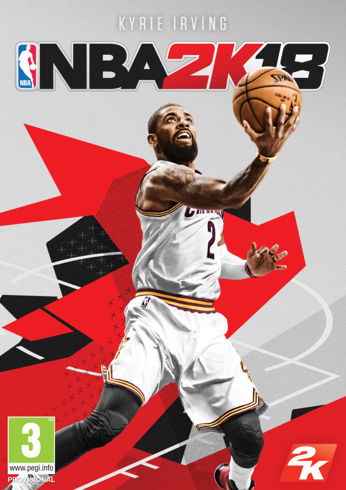

.

NBA 2K18
Plataformas:
PS4, XBOX ONE, PC e MOBILE.
Categorias:
Simulação, Esportes, RPG, Basquete e Multiplayer Online.
Desenvolvedor:
Visual Concepts.
CARACTERÍSTICAS
JOGABILIDADE DE ELITE
GRÁFICOS E APRESENTAÇÃO
EQUIPES LENDÁRIAS
MyGM/MyLEAGUE